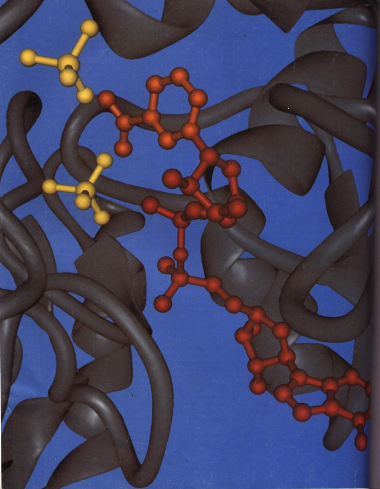
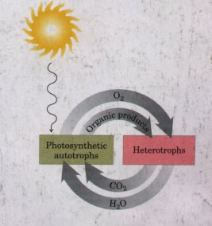
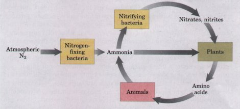
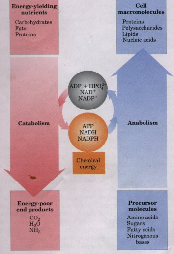
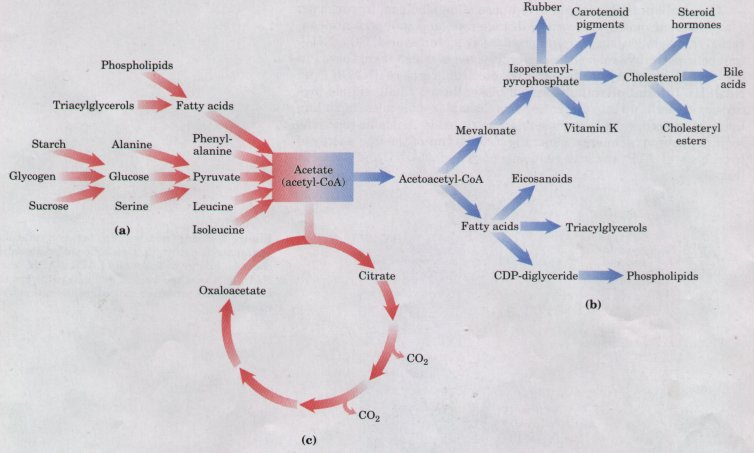

| Metabolism is a highly coordinated and
directed cell activity, in which many multienzyme systems
cooperate to accomplish four functions: (l) to obtain
chemical energy by capturing solar energy or by degrading
energy-rich nutrients from the environment, (2) to
convert nutrient molecules into the cell's own
characteristic molecules, including macromolecular
precursors, (3) to polymerize monomeric precursors into
proteins, nucleic acids, lipids, polysaccharides, and
other cell components, and (4) to synthesize and degrade
biomolecules required in specialized cellular functions. Although metabolism embraces hundreds of different enzymecatalyzed reactions, the central metabolic pathways-our major concern-are few in number and are remarkably similar in all forms of life. Living organisms can be divided into two large groups according to the chemical form in which they obtain carbon from the environment. Autotrophs (such as photosynthetic bacteria and higher plants) can use carbon dioxide from the atmosphere as their sole source of carbon, from which they construct all their carbon-containing biomolecules (see Fig. 2-4). Some autotrophic organisms, such as cyanobacteria, can also use atmospheric nitrogen to generate all their nitrogenous components. Heterotrophs cannot use atmospheric carbon dioxide and must obtain carbon from their environment in the form of relatively complex organic molecules, such as glucose. The cells of higher animals and most microorganisms are heterotrophic. Autotrophic cells are relatively self sufficient, whereas heterotrophic cells, with their requirements for carbon in more complex forms, must subsist on the products of other cells. Many autotrophic organisms are photosynthetic and obtain their energy from sunlight, whereas heterotrophic cells obtain their energy from the degradation of organic nutrients made by autotrophs. In our biosphere, autotrophs and heterotrophs live together in a vast, interdependent cycle in which autotrophic organisms use atmospheric CO2 to build their organic biomolecules, some of them generating oxygen from H2O in the process. Heterotrophs in turn use the organic products of autotrophs as nutrients and return CO2 to the atmosphere. The oxidation reactions that produce CO2 also consume O2, converting it to H2O. Thus carbon, oxygen, and water are constantly cycled between the heterotrophic and autotrophic worlds, solar energy ultimately providing the driving force for this massive process (Fig. 1). |
Facing page: The
active site of glyceraldehyde-3-phosphate dehydrogenase,
with the bound cofactor nicotinamide adenine dinucleotide
(NAD) shown in red. This enzyme catalyzes the oxidation
of glyceraldehyde-3-phosphate to 1,3-bisphosphoglycerate,
a step in glycolysis, a central pathway in glucose
metabolism. This is the earliest known example of an
enzymatic reaction in which the energy released by
electron transfer (oxidation) drives the formation of a
high-energy phosphate compound.  Figure 1: The cycling of carbon dioxide and oxygen between the autotrophic (photosynthetic) and the heterotrophic domains in the biosphere. The flow of mass through this cycle is enormous; about 4 × 1011 metric tons of carbon are turned over in the biosphere annually. |

Figure 2: The cycling of nitrogen in the biosphere. Gaseous nitrogen (N2) makes up 80% of our atmosphere.
All living organisms also require a source of nitrogen, which is necessary for the synthesis of amino acids, nucleotides, and other compounds. Plants are generally able to use either ammonia or soluble nitrates as their sole source of nitrogen, but vertebrate animals must obtain some nitrogen in the form of amino acids or other organic compounds. Only a few organisms-the cyanobacteria and a few species of soil bacteria that live symbiotically on the roots of certain plants (legumes)-are capable of converting ("fixing") atmospheric nitrogen (N2) into ammonia. Other microbial organisms (nitrifying bacteria) carry out the oxidation of ammonia to nitrites and nitrates. Thus, in addition to the global carbon and oxygen cycle (Fig. 1), a nitrogen cycle operates in the biosphere in which huge amounts of nitrogen undergo cycling and turnover (Fig. 2). The cycling of carbon, oxygen, and nitrogen, which involves many species of living organisms, depends on a proper balance between the activities of the producers (autotrophs) and consumers (heterotrophs) in our biosphere.
| These great cycles of matter are driven
by an enormous flow of energy through the biosphere,
which begins with the capture of solar energy by
photosynthetic organisms and its use to generate
energyrich carbohydrates and other organic nutrients;
these nutrients are then used as energy sources by
heterotrophic organisms. In the metabolic processes of
each organism participating in these cycles, and in all
energy-requiring activities, there is a loss of useful
energy (free energy) and an inevitable increase in the
amount of unavailable energy as heat and entropy. In
contrast to the cycling of matter, therefore, energy
flows one-way through the biosphere; useful energy can
never be regenerated in living organisms from energy
dissipated as heat and entropy. Carbon, oxygen, and
nitrogen recycle continuously, but energy is constantly
transformed into unusable forms. Metabolism, the sum of all of the chemical transformations that occur in a cell or organism, occurs in a series of enzyme-catalyzed reactions that constitute metabolic pathways. Each of the consecutive steps in such a pathway brings about a small, specific chemical change, usually the removal, transfer, or addition of a specific atom, functional group, or molecule. In this sequence of steps (the pathway), a precursor is converted into a product through a series of metabolic intermediates (metabolites). The term intermediary metabolism is often applied to the combined activities of all of the metabolic pathways that interconvert precursors, metabolites, and products of low molecular weight (not including macromolecules). Catabolism is the degradative phase of metabolism, in which organic nutrient molecules (carbohydrates, fats, and proteins) are converted into smaller, simpler end products (e.g., lactic acid, CO2, NH3). Catabolic pathways release free energy, some of which is conserved in the formation of ATP and reduced electron carriers (NADH and NADPH). In anabolism, also called biosynthesis, small, simple precursors are built up into larger and more complex molecules, including lipids, polysaccharides, proteins, and nucleic acids. Anabolic reactions require the input of energy, generally in the forms of the free energy of hydrolysis of ATP and the reducing power of NADH and NADPH (Fig. 3). |
 Figure 3: Energy relationships between catabolic and anabolic pathways. Catabolic pathways deliver chemical energy in the form of ATP, NADH, and NADPH. These are used in anabolic pathways to convert small precursor molecules into cell macromolecules. Figure 4 : Three types of nonlinear metabolic pathways: (a) converging, catabolic; (b) diverging, anabolic; and (c) a cyclic pathway, in which one of the starting materials (oxaloacetate) is regenerated and reenters the pathway. Acetate, a key metabolic intermediate, can be produced by the breakdown of a variety of fuels (a), can serve as the precursor for the biosynthesis of an array of products (b), or can be consumed in the catabolic pathway known as the citric acid cycle (c). |

Metabolic pathways are sometimes linear and sometimes branched, yielding several useful end products from a single precursor or converting several starting materials into a single product. In general, catabolic pathways are convergent and anabolic pathways divergent (Fig. 4). Some pathways are even cyclic: one of the starting components of the pathway is regenerated in the series of reactions that converts another starting component into a product. We shall see examples of each type of pathway in the following chapters.
Most organisms have the enzymatic equipment to carry out both the degradation and the synthesis of certain compounds (fatty acids, for example). The simultaneous synthesis and degradation of fatty acids would be wasteful and is prevented by separately regulating anabolic and catabolic reaction sequences: when one occurs, the other is suppressed. Such regulation could not occur if anabolic and catabolic pathways were catalyzed by the same set of enzymes, operating in one direction for anabolism, the opposite for catabolism. Inhibition of an enzyme involved in catabolism would also inhibit the reaction sequence in the anabolic direction. Catabolic and anabolic pathways that connect the same two end points (a fatty acid and acetate, for example) may employ many of the same enzymes, but invariably at least one of the steps is catalyzed by different enzymes in the catabolic and the anabolic directions, and these enzymes are the sites of separate regulation. It is also common for such paired catabolic and anabolic pathways to occur in different cellular compartments. Fatty acid catabolism, for example, occurs in mitochondria, whereas the synthesis of fatty acids takes place in the cytosol. The concentrations of intermediates, enzymes, and regulators can be maintained at different levels in different compartments, further contributing to the separate regulation of catabolic and anabolic reaction sequences. These devices for separation of anabolic and catabolic processes will be of particular interest in our discussions of metabolism.
Metabolic pathways are regulated at three levels. The first and most immediately responsive form of regulation is through the action of allosteric enzymes, which are capable of changing their catalytic activity in response to stimulatory or inhibitory modulators (p. 230). We shall meet examples of allosteric regulation throughout the following chapters. Metabolic control is exerted at a second level in higher organisms by hormonal regulation. Hormones are chemical messengers released by one tissue that stimulate or inhibit some process in another tissue. Hormones serve to coordinate the metabolic activities of different tissues, and their actions and effects are generally on a somewhat longer time scale than those of allosteric effectors. The third level of metabolic regulation is control of the rate of a metabolic step by regulating the concentration of its enzyme in the cell. The concentration of an enzyme at any given time is the result of a balance between its rate of synthesis and its rate of degradation, both of which are subject to regulation on a time scale of minutes to hours. The number of metabolic transformations that occur in a typical cell can seem overwhelming to a beginning student. Fortunately, there are recurring patterns in the metabolic pathways that make learning easier. Certain types of reactions occur in many different metabolic pathways but always employ the same coenzyme(s) and the same general mechanism. Many of the coenzymes are derived from vitamins (see Table 8-2), compounds essential in the diets of animals. The coenzymes are critical to the reaction mechanisms in which they participate. Once you have learned the general mechanism of a reaction, including the role of the cofactor, the recurring pattern in a variety of metabolic pathways will be easily recognizable. In the chapters that follow, we will usually discuss the general mechanism for each of these reactions when we first encounter the cofactor in its typical role.
In the first half of Part III we consider the major catabolic pathways by which cells obtain energy from the oxidation of various fuels: first, the central pathways of hexose conversion to triose (Chapter 14) and triose oxidation to carbon dioxide (Chapter 15); then the pathways of fatty acid oxidation (Chapter 16) and amino acid oxidation (Chapter 17). Chapter 18 is the pivotal point of our discussion of metabolism; it concerns chemiosmotic energy coupling, the universal mechanism in which a transmembrane electrochemical potential, produced either by substrate oxidation or by light absorption, drives the synthesis of ATP.
The second half of this part describes the major anabolic pathways by which cells use ATP to produce carbohydrates (Chapter 19), lipids (Chapter 20), and amino acids and nucleotides (Chapter 21) from simpler precursors. Finally, in Chapter 22 we step back from the details of the metabolic pathways and consider how those pathways are regulated and integrated in mammals by hormonal mechanisms.
We begin our study of intermediary metabolism with an introduction to bioenergetics (Chapter 13). But before we begin, a fmal word. Try not to forget that the myriad reactions described on these pages take place in, and play crucial roles in, living organisms. Ask of each reaction and of each pathway, "What is accomplished for the cell or the organism by this reaction or pathway? How does this pathway interconnect with the other pathways occurring simultaneously in the same cell to produce the energy and products required for cell maintenance and growth? How do the multilayered regulatory mechanisms cooperate to balance metabolic and energetic inputs and outputs, achieving the dynamic steady state of life?" Learned with this perspective, metabolism provides fascinating and revealing insights into life.